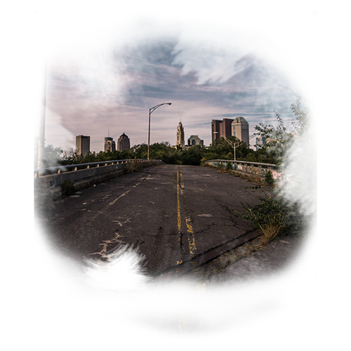
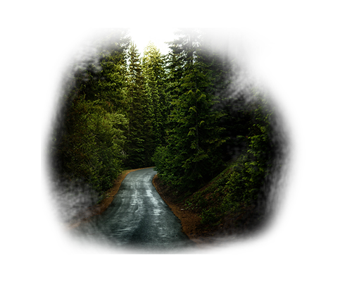

Salgo al exterior, no hay nadie, está todo como si hubiese estado años dormida, casas destruidas, coches amontonados, todo tirado por el suelo y lo peor de todo no es eso , lo peor es que me encuentro sola, en , no sé dónde y con un claro dilema.
Hay una carretera que parece que me lleva a la ciudad y una senda que me adentra en el bosque…
¿Qué camino he de coger?
CIUDAD  BOSQUE 